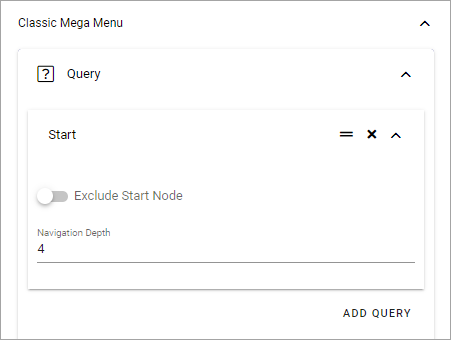
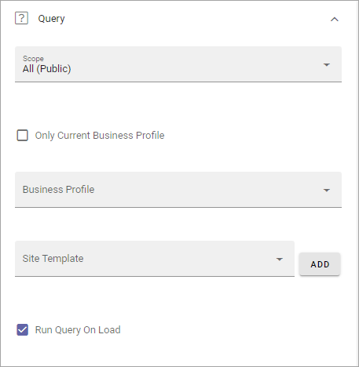
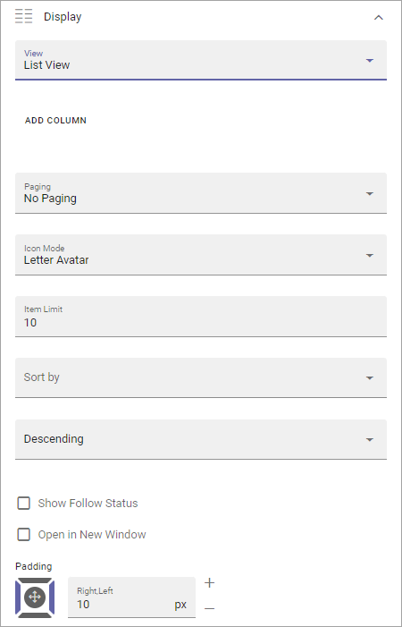
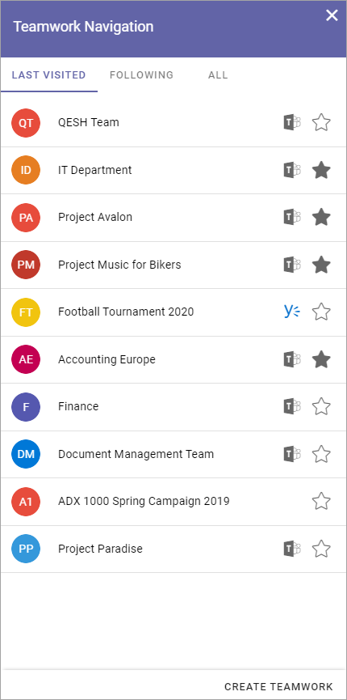
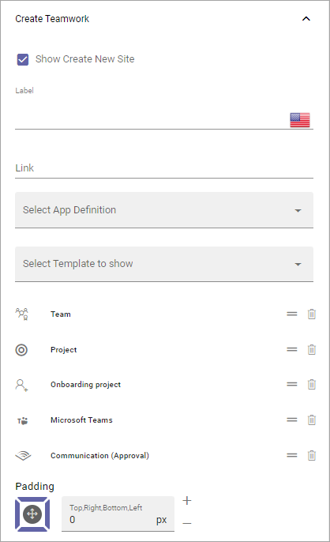

Header for Workspace¶
Here you can edit header settings for the Business Profile’s Workspace.

Style¶
Here you can set the following:
Inherit from tenant: I you would like to inherit the header style settings from the tenant, instead of using specific settings here, select this option.
Background: If you choose to not inherit settings, add background color for the header, using these settings.
Text: If you choose to not inherit settings, add text color for the header, using these settings.
App Launcher¶
The following can be set here:

Inherit from tenant: I you would like to inherit the app launcher settings from the tenant, instead of using specific settings here, select this option.
If you choose to not inherit the app launcher settings, add settings using the options. You use them the same way as the App Lancher settings for the tenant. See the heading “App Launcher” on this page: Tenant Header settings
Logo¶
The Logo settings are these:
Inherit from tenant: If you would like to inherit the logo settings from the tenant, instead of using specific settings here, select this option.
I you do not choose to inherit settings, set the desired logo settings here. You use them the same way as the Logo settings for the tenant, see link above.
Search¶
Under Search, the following is available:

Search Box on Header: If a search box should be available in the header, select this option.
Default Search Box text to Query string: Available when the option above is selected. For advanced search implementations. With this option active you can add parameters to the search query string, for various implementations.
Inherit Business Profile settings: This regards settings for Quick Search and Advanced search. If you would like to use the Business Profile Search setttings, keep this option selected. If you would like to set specific settings, deselect and use the settings shown. They work the same ways as the settings for the Search block, see: Search block settings
Classic Mega Menu¶
These settings are available when “Classic Action Menu & Mega Menu” is selected for the Business profile.

Query¶
Here you set the following:
Use these settings to create a Classic Mega Menu. Click ADD QUERY to start Page Picker to select part of (or the whole) the navigation tree for a Page Collection.
You can use the icon to the left to the left to edit the order and the x to delete.
Don’t forget to save when you’re done.
For more information about the Page Picker, see: The Page Picker
Display¶
For Display, the following settings are available:

Level 1 etc: Here you can set styles for the different levels. To add style for an additional level, click ADD STYLE. See below for available Style settings.
The rest of the settings are the same as in the Mega Manu block, see: The Mega Menu block
These are the Style settings available for a level:

Classic Action Menu¶
These settings are available when “Classic Action Menu & Mega Menu” is selected for the Business profile.

Components: This column lists the Components that can be displayed in the Action Menu. “My Teams” and “Notification Panel” has additional settings, see below.
Display: You can decide which Components to display, and how: “Pinned” - is default, an Icon will be displayed; “Hidden” - if you don’t want the Component to be available; “Menu” - if you want to display the Component in the menu (the three standing dots) instead as an Icon.
Order: You can decide the order for the Components you’re displaying, from left to right.
Teamwork Navigation - additional settings¶
Click the cog wheel to set additional settings for Teamwork Navigation. Here’s what you can set:

You can edit which Categories (tabs) to display in Teamwork Navigation and you can work with a number of details for what is actually shown under each category. Using the option Create Teamwork you can edit the settings for what is to be displayed regarding Show Create New Site, and if that option should be available for users at all.
Note that a category is basically a Team Collaboration Rollup, so if you think along this line when you edit the settings for a category, you’re on the right track.
Categories¶
You can edit categories this way:
Click the dust bin to remove a category.
Click the cog wheel to handle the detailed settings for a category.
When editing settings for a category, the same settings are available as when creating a new category, see below.
To add a new category, click ADD.

The following settings are available:

Category Name: Add a name for the category (tab) here, in some or all the available languages. Click the flag to change language.
General¶
Here you can add a Block Title if needed. Click the flag to change language.

The Title is shown under the Categories.
Query¶
For Query you can set:
Scope: Select scope, for example All, Followed or Member of. (See more information about this below.).
Only Current Business Profile: Below you can select Business Profile to execute the query in. If you want to do that for the Current Business profile only, select this option.
Business Profile: You can select a Business Profile for the query in this list.
Site Template: Here you can select one or more Site Templates for the query, meaning all sites that are created from this template, in the selected Business Profile. Don’t forget to click ADD when you have salected a Tamplate. It’s not mandatory. If you don’t select Site Templates here, the query is run for all sites.
Run Query On Load: For a shorter list of Teamworks, it most likely works fine to run a query when the list is opened, but for longer lists it may not. For a longer list, for example a list of all Teamworks, deselecting this option and instead displaying a search box, may be a better choice.
To add a search box, use the Filter settings, see below.
Regarding Scope, here’s more detailed information:
Note that the first three scopes only include teamwork connected to Omnia that are assigned a provisioning template and can be found in the Teamwork list within Omnia admin.
All (public): All Teamwork App Instances where “Show in public listings” is checked. (Omnia Database).
Followed: All followed Teamwork App Instances. (Omnia Database).
Last Visited: All last visited Teamwork App Instances. (Omnia Database).
All (SharePoint Sites): All sites in SharePoint. (SharePoint Search).
Followed (SharePoint Sites): All followed sites in SharePoint. (SharePoint Social API).
Member of (Office 365 Groups): Member of Office 365 Groups. (MS Graph).
Display¶
Display has the follwing settings:
View: Select type for view for the list; List View or Navigation View. If you select List View you must also add at least one column.
Paging: Use this option to decide how paging should be handled for this list; No paging, Classic or Scroll.
Icon Mode: You can choose to use Letter Avatar or the template’s icon.
Item Limit/Page Size: Set the number of links that should be displayed before a Show more message is shown.
Sort By: Here you can select what to sort the list by.
Descending/Ascending: Choose to how to sort the list here.
Show Follow Status: Set to show the stars for follow status, or not (se below for an example.)
Open in New Window: Decide if the teamwork should open in a new window or not, when the link is clicked.
Padding: Set some padding between the border of the list and the lit’s content, if needed.
Here’s an example with Show Follow Status selected. A filled star indicates that the user follows the teamwork.
Use the filter settings to make filters available for users, in the list.

Create Teamwork¶
The following is available here (as an example):
You work with the settings here the same way as in the Create App Block, see: The Create App block
Notification Panel - additional settings¶
Click the cog wheel to set additional settings for Notification Panel. The following settings can be used:

What you actually do is using a Notification Panel block to display in the heading. Therefore, these settings are exactly the same as are described here: The Notification Panel block